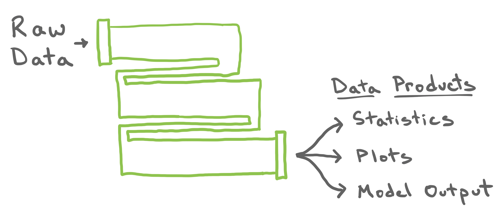
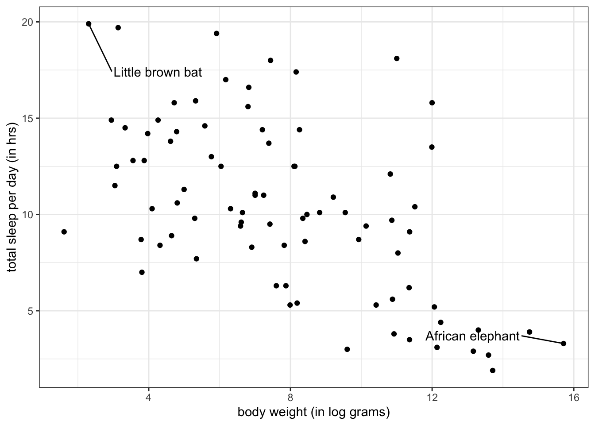
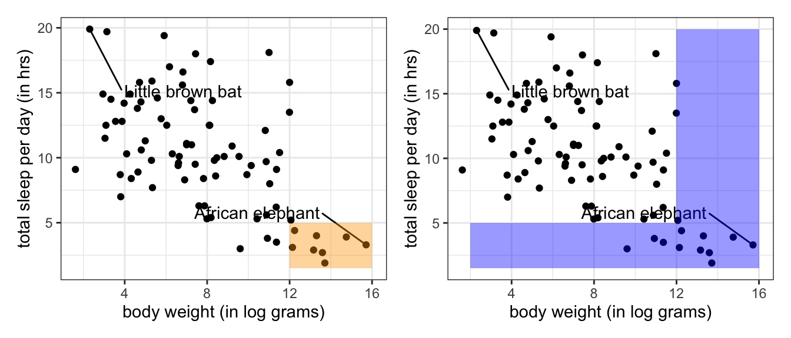

Data pipelines, filtering, logical variables and comparison operators
Introducing the pipe
At this stage in the course, the number of functions that you are familiar with has grown dramatically. To do truly powerful things with data, you need to not just call one of these functions, but string together many of them in a thoughtful and organized manner.
An an example, let’s return to our work with the penguins dataset from last lecture. In order to calculate the mean and standard deviation of bill length across each species of penguin, we need to take the original data frame and
Use group_by() to inform R we would like to calculate summaries across levels of a categorical variable (namely, the species variable).
Use summarise() to calculate these summaries.
A conventional approach breaks this process into two distinct lines of code and saves the output mid-way through.
An approach that is more concise, easier to read, and generally faster to run is to compose these functions together with “the pipe”. The pipe, written |>, is an operator that you have access to when you load the tidyverse package. If you have two functions, f1 and f2, both of which take a data frame as the first argument, you can pipe the output of f1 directly into f2 using.
f1(DF) |> f2()
Let’s use the pipe to rewrite the code shown above.
The first function, group_by(), is unchanged. However the second function, summarise(), is now missing its first argument, the data frame. That is because it is being piped directly in from the output of the first function.
While this is a fine way to use the pipe, your code is made much more readable if you format it like this:
For the rest of the examples given in the notes, we will stick with this formatting when using the pipe operator. This code results in the same output as the first version, but it now reads a bit like a poem: “Take the penguins data frame, prepare it for calculations across each species, then calculate the mean and standard deviation of bill length (across each species of penguin)”.
This poem is admittedly not particularly poetic.
Breaking the pipe

Here’s another, less poetic way to think about the pipe, as described by the above image! Most claims about data start with a raw data set, undergo many subsetting, aggregating, and cleaning operations, then return a data product. Each one of these operations can be represented by one of the turns through the pipe. It’s good practice to understand the output of each line of code by breaking the pipe. With regards to our previous example, we can remove the summarise() and just look at the output of the group_by() step.
This looks . . . exactly like the original data frame. Well, not exactly like it: there is now a note at the top that the data frame now has the notion of groups based on species. In effect, group_by() has taken the generic data frame and turned it into the one in the middle below: the same data frame but with rows now flagged as belonging to one group or another. When we pipe this grouped data frame into summarise(), summarise() collapses that data frame down into a single row for each group and creates a new column for each new summary statistic.
In addition to providing greater insight on each step in your data pipeline, breaking the pipe is a fantastic way to troubleshoot any errors in your pipeline. If you run just the first piece of your pipeline and it works, add the second piece and try again. Continue this process with the rest of the pieces until the error occurs. When you run into the error, the piece you just added is the guilty party.
The pipe in action
We will now look at a few examples to understand the power of such a simple piece of syntax. In doing so, we will introduce a few more dplyr functions that will expand your ability to perform more specific pieces of data analysis.
Our data set of choice begins with a very general focus. In 2007, Savage and West published A qualitative, theoretical framework for understanding mammalian sleep1, wherein they “develop a general, quantitative theory for mammalian sleep that relates many of its fundamental parameters to metabolic rate and body size”. Characterizing the sleep patterns of all mammals is a broad task and their data set is corresponding diverse. Take a look at the first ten rows of their data below.
# A tibble: 83 × 5
name sleep_total log_bodywt vore conservation
<chr> <dbl> <dbl> <chr> <chr>
1 Cheetah 12.1 10.8 carni lc
2 Owl monkey 17 6.17 omni <NA>
3 Mountain beaver 14.4 7.21 herbi nt
4 Greater short-tailed shrew 14.9 2.94 omni lc
5 Cow 4 13.3 herbi domesticated
6 Three-toed sloth 14.4 8.26 herbi <NA>
7 Northern fur seal 8.7 9.93 carni vu
8 Vesper mouse 7 3.81 <NA> <NA>
9 Dog 10.1 9.55 carni domesticated
10 Roe deer 3 9.60 herbi lc
# ℹ 73 more rows
In this data set, the unit of observation is a single species and the variables observed on each are its name, the average length of sleep each day, the natural log of the average weight, its dietary pattern, and its conservation status. We can visualize the relationship between sleep and body size in all 83 species using a scatter plot.

The mammals vary from the wee brown bat, slumbering for nearly 20 hours a day, to the massive African elephant, nodding off for less than five. That is quite a range! Lets drill down to smaller subsets of this data frame to gain a more nuanced sense of what is going on.
Example 1: Mutation
Oftentimes the variables we are most interested in analyzing in a data set don’t exist in the form most conducive for doing so. Other times, they don’t exist at all. For example, note how in our first output of the msleep data and the scatter plot that body weight is being presented in log grams (log_bodywt). In reality, the body weight as originally present in the msleep dataset is called bodywt and is recorded in kilograms! To get to log_bodywt, we will perform what is called a mutation.
Mutation
The act of creating a new column in a dataset based on information in existing column(s).
There are a variety of different mutations that you can apply to a column(s) in a dataset. In the last lecture, we overwrote an existing column with an updated version of itself. Today, we will perform a mathematical mutation on the bodywt column.
Here, the first argument, msleep, is piped to the dplyr function mutate() and the second argument, log_bodywt, creates a new column named log_bodywt by multiplying the bodywt column by 100 (converting kilograms to grams) and then taking the natural log. We then pipe this output into select() to compare the two columns.
You can use mutate() to create multiple columns at the same time:
If you think about the shape of a data frame, there are two basic ways you might go about slicing and dicing it into smaller subsets.
One way is to go at it is column-by-column. The act of selecting a subset of the columns of a data frame is called, well, selecting. This is what we touched on briefly in the last lecture and in the previous example. When you select a column, you can do so either by its name or by its column number (or index). Selecting columns by name is more useful because their order tends to be arbitrary and might change over the course of an analysis.
The other way to go at it is row-by-row. The act of subsetting the rows of the data frame based on their row number is called slicing. As with columns, the order of the rows is also often arbitrary, so this is of limited use. Much more useful is filtering.
In the tidyverse, these functions are named select(), slice(), and filter().
Filtering
The act of subsetting the rows of a data frame based on the values of one or more variables to extract the observations of interest.
Filters are powerful because they comb through the values of the data frame, which is where most of the information is. The key part of any filter is the condition that you assert for the rows that are retained in your data frame. Let’s set up a filter to return only the little brown bat.
# A tibble: 1 × 13
name genus vore order conservation sleep_total sleep_rem sleep_cycle awake
<chr> <chr> <chr> <chr> <chr> <dbl> <dbl> <dbl> <dbl>
1 Little… Myot… inse… Chir… <NA> 19.9 2 0.2 4.1
# ℹ 4 more variables: brainwt <dbl>, bodywt <dbl>, log_bodywt <dbl>,
# sleep_total_min <dbl>
Here name == "Little brown bat" is the condition that must be met by any row in the data set to be retained. The syntax used to set up the condition is a comparison between a column in the data frame on the left and a possible value of that column on the right.
Example 2 Detour: Comparison Operators
The filter above uses the most direct condition: it retains the rows that have a value in the name variable that is precisely "Little brown bat". In this case, there is only one such row. There are a range of different comparisons that can be made, though, and each has its own operator.
Operator
Translation
==
equal to
!=
not equal to
<
less than
>
greater than
<=
less than or equal to
>=
greater than or equal to
At first, the == operator looks like a typo. Why doesn’t we use =? The reason is that a single equals sign is already busy at work in R: it sets the values of arguments inside a function. Instead of assignment, we want to determine whether the thing on the left holds the same value as the thing on the right, so we use ==. It might help you keep things straight if you read it in your head as “is exactly equal to”.
Let’s return only the rows with large animals, defined as those with a log body weight greater than 12.
# A tibble: 9 × 13
name genus vore order conservation sleep_total sleep_rem sleep_cycle awake
<chr> <chr> <chr> <chr> <chr> <dbl> <dbl> <dbl> <dbl>
1 Cow Bos herbi Arti… domesticated 4 0.7 0.667 20
2 Asian … Elep… herbi Prob… en 3.9 NA NA 20.1
3 Horse Equus herbi Peri… domesticated 2.9 0.6 1 21.1
4 Donkey Equus herbi Peri… domesticated 3.1 0.4 NA 20.9
5 Giraffe Gira… herbi Arti… cd 1.9 0.4 NA 22.1
6 Pilot … Glob… carni Ceta… cd 2.7 0.1 NA 21.4
7 Africa… Loxo… herbi Prob… vu 3.3 NA NA 20.7
8 Brazil… Tapi… herbi Peri… vu 4.4 1 0.9 19.6
9 Bottle… Turs… carni Ceta… <NA> 5.2 NA NA 18.8
# ℹ 4 more variables: brainwt <dbl>, bodywt <dbl>, log_bodywt <dbl>,
# sleep_total_min <dbl>
There were 9 such animals and you can see all of them are large.
Example 2 Detour: Logical Operators
What if you want both the little brown bat and the African elephant? What if you want both the large creatures as well as those that sleep only briefly? These are tasks that call for multiple comparisons composed together with the logical operators &, |, and %in%.
This filter returns the creatures who are large and who sleep little.
# A tibble: 8 × 13
name genus vore order conservation sleep_total sleep_rem sleep_cycle awake
<chr> <chr> <chr> <chr> <chr> <dbl> <dbl> <dbl> <dbl>
1 Cow Bos herbi Arti… domesticated 4 0.7 0.667 20
2 Asian … Elep… herbi Prob… en 3.9 NA NA 20.1
3 Horse Equus herbi Peri… domesticated 2.9 0.6 1 21.1
4 Donkey Equus herbi Peri… domesticated 3.1 0.4 NA 20.9
5 Giraffe Gira… herbi Arti… cd 1.9 0.4 NA 22.1
6 Pilot … Glob… carni Ceta… cd 2.7 0.1 NA 21.4
7 Africa… Loxo… herbi Prob… vu 3.3 NA NA 20.7
8 Brazil… Tapi… herbi Peri… vu 4.4 1 0.9 19.6
# ℹ 4 more variables: brainwt <dbl>, bodywt <dbl>, log_bodywt <dbl>,
# sleep_total_min <dbl>
This can be read as “filter the msleep data frame to return the rows where both the log body weight is greater than 12 and the sleep total is less than 5”. We see that there are 8 such creatures, one fewer than the data frame with only the body weight filter (bottle-nosed dolphins sleep, on average, 5.2 hrs).
Using & to represent “and” is common across most computer languages but you can alternatively use the somewhat more compact syntax of simply adding the second filter after a comma.
# A tibble: 12 × 13
name genus vore order conservation sleep_total sleep_rem sleep_cycle awake
<chr> <chr> <chr> <chr> <chr> <dbl> <dbl> <dbl> <dbl>
1 Cow Bos herbi Arti… domesticated 4 0.7 0.667 20
2 Roe d… Capr… herbi Arti… lc 3 NA NA 21
3 Asian… Elep… herbi Prob… en 3.9 NA NA 20.1
4 Horse Equus herbi Peri… domesticated 2.9 0.6 1 21.1
5 Donkey Equus herbi Peri… domesticated 3.1 0.4 NA 20.9
6 Giraf… Gira… herbi Arti… cd 1.9 0.4 NA 22.1
7 Pilot… Glob… carni Ceta… cd 2.7 0.1 NA 21.4
8 Afric… Loxo… herbi Prob… vu 3.3 NA NA 20.7
9 Sheep Ovis herbi Arti… domesticated 3.8 0.6 NA 20.2
10 Caspi… Phoca carni Carn… vu 3.5 0.4 NA 20.5
11 Brazi… Tapi… herbi Peri… vu 4.4 1 0.9 19.6
12 Bottl… Turs… carni Ceta… <NA> 5.2 NA NA 18.8
# ℹ 4 more variables: brainwt <dbl>, bodywt <dbl>, log_bodywt <dbl>,
# sleep_total_min <dbl>
Be cautious in deciding whether you want to use & or |. While | is generally read as “or”, we could also describe the above filter as one that returns the rows that have a high body weight and the rows that have low sleep times.
One way to keep them straight is to keep an eye on the number of observations that are returned. The intersection of multiple conditions (using &) should result in the same or fewer rows (the orange area) than the union of multiple conditions (using |) (the blue area).

When working with nominal categorical variables, the only operator that you’ll be using is ==. You can return a union like normal using |,
msleep|>filter(name=="Little brown bat"|name=="African elephant")
# A tibble: 2 × 13
name genus vore order conservation sleep_total sleep_rem sleep_cycle awake
<chr> <chr> <chr> <chr> <chr> <dbl> <dbl> <dbl> <dbl>
1 Africa… Loxo… herbi Prob… vu 3.3 NA NA 20.7
2 Little… Myot… inse… Chir… <NA> 19.9 2 0.2 4.1
# ℹ 4 more variables: brainwt <dbl>, bodywt <dbl>, log_bodywt <dbl>,
# sleep_total_min <dbl>
Or you can save some typing (and craft more readable code) by using %in% instead:
msleep|>filter(name%in%c("Little brown bat", "African elephant"))
# A tibble: 2 × 13
name genus vore order conservation sleep_total sleep_rem sleep_cycle awake
<chr> <chr> <chr> <chr> <chr> <dbl> <dbl> <dbl> <dbl>
1 Africa… Loxo… herbi Prob… vu 3.3 NA NA 20.7
2 Little… Myot… inse… Chir… <NA> 19.9 2 0.2 4.1
# ℹ 4 more variables: brainwt <dbl>, bodywt <dbl>, log_bodywt <dbl>,
# sleep_total_min <dbl>
Taxonomy of Data: Logicals
It is useful to pause here to look under the hood of this code. Once you get accustomed to the comparison operators and the syntax, the R code reads very similarly to the equivalent English command. But how are those comparisons being represented in terms of data?
To answer this question, consider a simple numeric vector of four integers.
We can apply a comparison operator to this vector using the same syntax as above. Let’s compare each value in this vector to see if its less than 5.
a<5
[1] TRUE TRUE FALSE FALSE
The result is a vector of the same length as a where each value indicates whether the comparison to each element was true or false. While it looks like a factor or a character vector TRUE and FALSE, this is actually our newest entry into the Taxonomy of Data: the logical vector.
A logical vector can only take two values, TRUE and FALSE (R also recognizes T and F but not True or true). While it might seem like a categorical variable with only two levels, a logical vector has an important property that makes it behave like a numerical variable.
In a logical vector, a value of true is represented both by TRUE and by the number 1 and false by FALSE and the number 0. This integer representation is why TRUE + TRUE will work (it’s 2!) but "TRUE" + "TRUE" will not.
This dual representation is very useful because it allows us to compute a proportion using, paradoxically, the mean() function.
a < 5 results in a vector with two 1s and two 0s. When you take the mean like this, you’re really finding the proportion of the elements that meet the condition that you laid out in your comparison. This is a very handy trick. Let’s apply it to the msleep dataset as part of our next example.
Example 3
In the following data pipeline, we will
Split our mammals up by diet (carnivore, herbivore, omnivore, etc.)
Calculate the proportion of mammals in each diet group that sleep over eight hours in the day
Calculate the number of mammals in each group
This will require both group_by() and summarise(), as well as our handy trick discussed above and a new summary function.
msleep|>group_by(vore)|>summarise(p_gt_8hrs =mean(sleep_total>8), n =n())
# A tibble: 5 × 3
vore p_gt_8hrs n
<chr> <dbl> <int>
1 carni 0.684 19
2 herbi 0.594 32
3 insecti 1 5
4 omni 0.95 20
5 <NA> 0.714 7
In the above code, sleep_total > 8 creates a vector of TRUEs and FALSEs depending on whether the mammal slept for over eight hours a day. mean() then treats these TRUEs and FALSEs like 1s and 0s, and produces a proportion of mammals who sleep over eight hours a day in each diet group.
The n() summary statistic counts the number of observations within each group. For example, there are nineteen carnivores in the msleep dataset. Based on this, we can deduce that thirteen carnviores satisfied our sleeping condition. This means that when calculating the proportion for carnivores, the mean() function is taking the average of thirteen 1s/TRUEs and six 0s/FALSEs!
The code written above could be equivalently written as follows:
msleep|>mutate(long_sleep =sleep_total>8)|>group_by(vore)|>summarise(p_gt_8hrs =mean(long_sleep), n =n())
In this version, the sleep_total > 8 vector is made into a new column using mutate() called long_sleep. This is a column of TRUEs and FALSEs, and we can then take its mean directly in the summarise() step.
Example 4: Arranging
Sometimes, we are interested in arranging the rows of a data frame according to some logical ordering of a column. This ordering is straightforward for numeric columns; the smallest numbers should be placed first and ascend to the larger ones (or vice versa). We might also think about what happens when passing in a column of characters. Luckily, the dplyr package has a catch-all solution to this in the form of the arrange() function.
# A tibble: 83 × 2
name sleep_total
<chr> <dbl>
1 Giraffe 1.9
2 Pilot whale 2.7
3 Horse 2.9
4 Roe deer 3
5 Donkey 3.1
6 African elephant 3.3
7 Caspian seal 3.5
8 Sheep 3.8
9 Asian elephant 3.9
10 Cow 4
# ℹ 73 more rows
From this output, we can see that the giraffe sleeps for the smallest amount of time per day (not even two hours)! But maybe we are interested in which mammal sleeps the longest. If this is the case, we can modify the arrange() function slightly by wrapping our column of interest within desc().
# A tibble: 83 × 2
name sleep_total
<chr> <dbl>
1 Little brown bat 19.9
2 Big brown bat 19.7
3 Thick-tailed opposum 19.4
4 Giant armadillo 18.1
5 North American Opossum 18
6 Long-nosed armadillo 17.4
7 Owl monkey 17
8 Arctic ground squirrel 16.6
9 Golden-mantled ground squirrel 15.9
10 Tiger 15.8
# ℹ 73 more rows
What if you pass a column of characters to arrange()?
# A tibble: 83 × 3
name vore sleep_total
<chr> <chr> <dbl>
1 Cheetah carni 12.1
2 Northern fur seal carni 8.7
3 Dog carni 10.1
4 Long-nosed armadillo carni 17.4
5 Domestic cat carni 12.5
6 Pilot whale carni 2.7
7 Gray seal carni 6.2
8 Thick-tailed opposum carni 19.4
9 Slow loris carni 11
10 Northern grasshopper mouse carni 14.5
# ℹ 73 more rows
When arranged by vore, carni comes first, and the rest of the diet groups will follow in alphabetical order. The mammals aren’t arranged in any specific order within a diet group, but we can change that by passing another column to arrange(). Passing additional columns to arrange() will systematically break ties. The below code arranges the data frame first by diet group (from A to Z) and then breaks ties by (ascending) sleep time:
# A tibble: 83 × 3
name vore sleep_total
<chr> <chr> <dbl>
1 Pilot whale carni 2.7
2 Caspian seal carni 3.5
3 Bottle-nosed dolphin carni 5.2
4 Common porpoise carni 5.6
5 Gray seal carni 6.2
6 Genet carni 6.3
7 Northern fur seal carni 8.7
8 Red fox carni 9.8
9 Dog carni 10.1
10 Jaguar carni 10.4
# ℹ 73 more rows
Summary
If you’re thinking, 😬 , yikes there was a lot of coding in these notes, you’re right. Don’t worry. We’ll have plenty of time to practice in class! Here’s a recap of what we went through.
As we begin to do analyses that require multiple operations, the pipe operator, |>, can be used to stitch the functions together into a single pipeline. With the pipe operator in tow, we then introduced some new types of data operations.
We can express existing variables in new ways or create new variables altogether by performing a mutation. There are several ways to subset a data frame but the most important for data analysis is filtering: subsetting the rows according to a condition. In R, that condition is framed in terms of a comparison between a variable and a value (or set of values). Comparisons take many forms and can be combined using logical operators. The result is a logical vector that can be used for filtering or computing summary statistics. Finally, we learned to arrange a data frame by the ordering of a column.
—————————
The Ideas in Code
Some notes rely heavily on code to augment your learning and understanding of the main concepts. This “Ideas in Code” section is meant to expand more on concepts and functions that the notes utilize but may not fully explain.
This specific set of notes contains references to many functions from the tidyverse library such as mutate(), select()filter(), arrange(), ggplot(), group_by(), summarize(). We delve more into some of these functions here.
mutate()
This function allows you to create a new column in a dataframe. In typical tidyverse fashion, the first argument is a dataframe. The second argument names and defines how that new column is created. Above, we saw:
Here, the first argument, arbuthnot, is piped to mutate() and the second argument, total = boys + girls, creates a new column named total by adding together the columns boys and girls. You can use mutate() to create multiple columns at the same time:
Note that switching the order of the two new columns created above such that girl_proportion = girls / total comes before total = boys + girls will produce an error because total is used before it is created.
select()
This function is defined above as “selecting a subset of the columns of a data frame.” You’ve seen how to use select() to select or “grab” certain columns, but you can also use select() to omit certain columns. The last block of code can be rewritten to produce the same output by placing a minus sign, -, in front of the columns to omit:
This function arranges the rows of a data frame according to some logical ordering of a column. This ordering is straightforward for numeric columns; the smallest numbers are placed first and ascend to the larger ones. That is, unless you use desc() (which stands for descending).
But what if you pass a column of characters to arrange()? Let’s take a look:
penguins%>%arrange(species)%>%select(species, island, bill_length_mm)
When arranged by species, Adelie penguins come first, followed by Chinstrap, then Gentoo. The penguins aren’t arranged in any specific order within a species, but we can change that by passing another column to arrange(). Passing additional columns to arrange() will systematically break ties. The below code arranges the data frame first by species (alphabetically) and then breaks ties by (ascending) bill length:
penguins%>%arrange(species, bill_length_mm)%>%select(species, island, bill_length_mm)
This function summarizes a data frame into a single row. We can summarize a data frame by taking means or calculating the number of rows as above. We can also do other calculations like taking a median or calculating the variance of a column:
msleep%>%summarize(median_sleep =median(sleep_total), variance_sleep =var(sleep_total), n =n())
# A tibble: 1 × 3
median_sleep variance_sleep n
<dbl> <dbl> <int>
1 10.1 19.8 83
However, if summarize() is preceded by group_by(), then it will output multiple rows according to groups specified by group_by():
msleep%>%group_by(vore)%>%summarize(median_sleep =median(sleep_total), variance_sleep =var(sleep_total), n =n())
# A tibble: 5 × 4
vore median_sleep variance_sleep n
<chr> <dbl> <dbl> <int>
1 carni 10.4 21.8 19
2 herbi 10.3 23.8 32
3 insecti 18.1 35.1 5
4 omni 9.9 8.70 20
5 <NA> 10.6 9.02 7
This syntax looks a lot like the syntax used for mutate()! Like in mutate(), we name and define new columns: new_column = formula. The difference is that summarize() returns a brand new data frame that does not contain the columns of the original data frame where mutate() returns a data frame with all columns of the original data frame in addition to the newly defined ones.